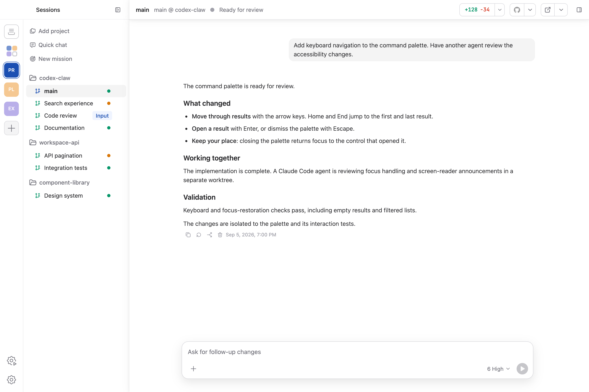

01
Run a real team
Keep agents in their own conversations, with their own context and state. From the Cockpit, drag a GitHub issue onto the right agent and let the team take it from there.
OpenAI Codex, with a command center
Codex Claw gives every agent the full power of the OpenAI Codex harness—then adds the place to steer a team, keep context, and ship together. Pair your phone to keep coding on the road.

Codex is remarkably good at doing the work. Codex Claw is built for directing it: launch a team of agents, see what each one is doing, open the browser they are using, and jump in exactly when it matters.
Assign work, automate the queue, and keep every agent moving from one calm surface.
Keep agents in their own conversations, with their own context and state. From the Cockpit, drag a GitHub issue onto the right agent and let the team take it from there.
Watch GitHub for matching issues, create the right agent or Bench template, send the assignment, and clean up when the work is done.
Follow plans, tool calls, diffs, approvals, and reasoning in the same readable stream Codex understands.
Connect the Codex mobile app to your Claw workspace and pick up wherever the day takes you. Your agents keep working while you stay in the loop from the road.
When a task leaves the terminal, Codex Claw keeps the computer-use session beside the conversation—visible, inspectable, and ready.
See the workflow →Give agents an in-app browser for research, local previews, and the web surfaces your code touches.
Codex Claw keeps the human in the loop without making the human the bottleneck.
Build with Codex ClawGive one agent the brief. Let the team split the work.
Inspect tool calls, browser state, files, and approvals in one view.
Steer a turn, queue the next move, or let the team finish.
Review the diff, merge the result, and move on to the next idea.
Codex Claw is a free desktop cockpit for the Codex subscription you already have. No extra per-agent meter, no new workspace bill.
Download for macOSThe next move is yours
Codex Claw is the team cockpit for the OpenAI Codex harness.
Download for macOS macOS arm64 • latest release